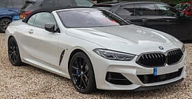

The second-generation of the BMW 8 Series consists of the BMW G14 (convertible version), BMW G15 (two-door coupe version) grand tourers and BMW G16 (four-door "Gran Coupe" sedan version) executive cars (E). The G14/G15/G16 generation has been in production since 2018, and is often collectively referred to as the G15.
